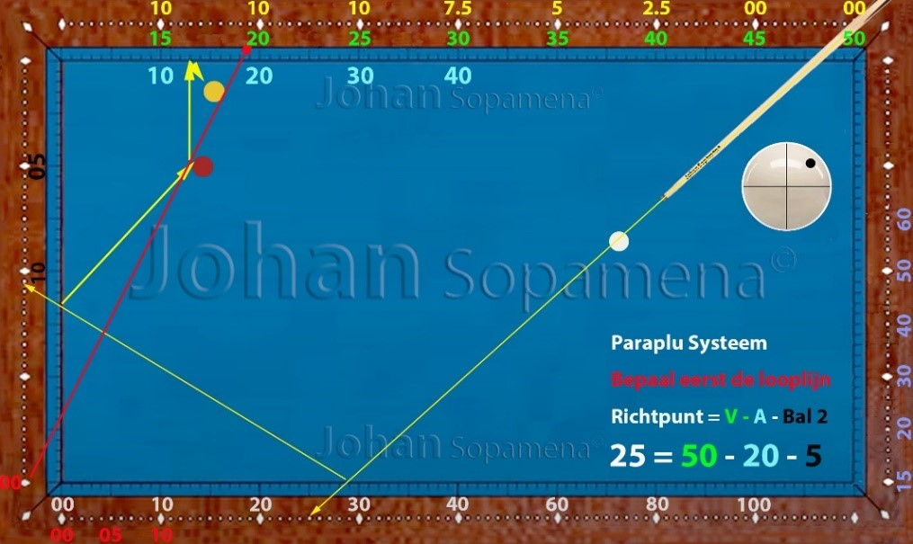
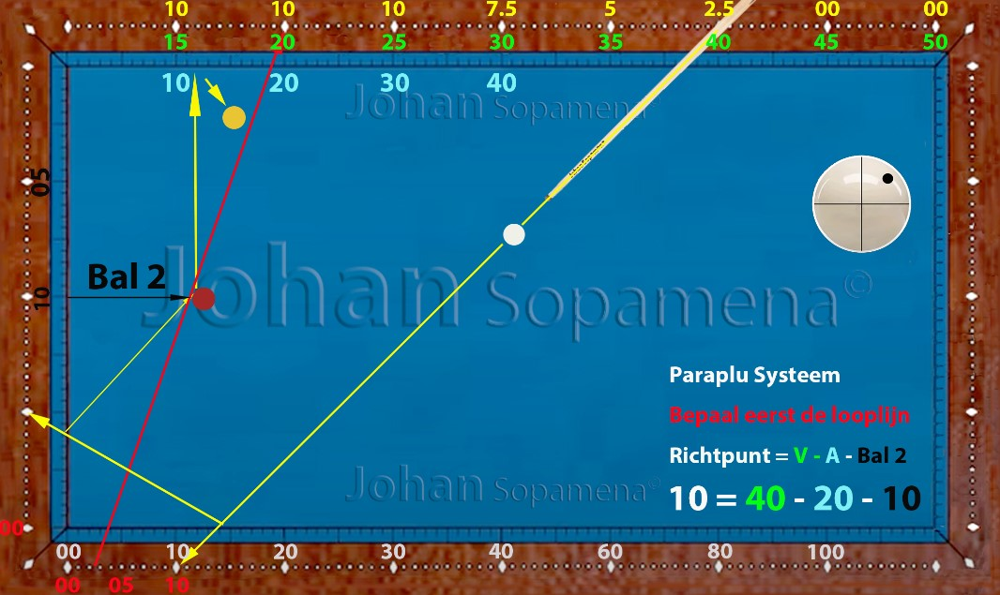
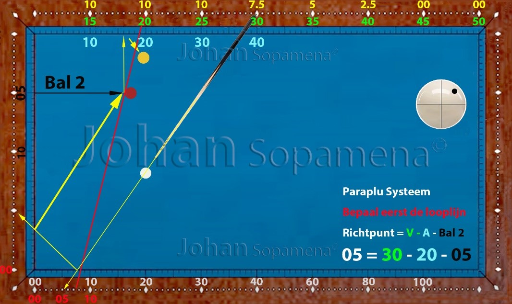
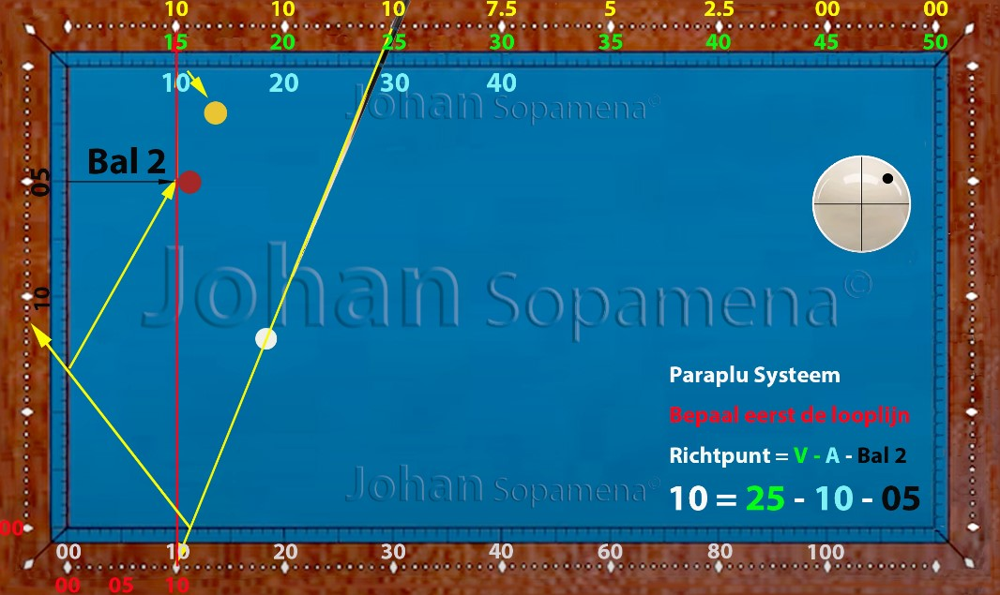

Hoofdstuk 11 — Korte–Lange–Korte (KLK) systeem
11.1 Inleiding
Het KLK-systeem (Korte–Lange–Korte) is een veelzijdig driebandensysteem dat wordt toegepast wanneer de speelbal dicht bij de korte band ligt en via een gecontroleerde lijn naar de lange band moet worden gestuurd, om vervolgens opnieuw de korte band te raken als derde band.
Dit systeem is bijzonder nuttig in situaties waarin de tweede bal relatief centraal ligt en de speler een stabiele, voorspelbare lijn nodig heeft. Het KLK-systeem wordt vaak gebruikt door spelers die precisie zoeken in korte patronen met beperkte ruimte.
11.2 Basisprincipe van het KLK-systeem
Het KLK-systeem werkt op basis van een vaste verhouding tussen:
- de positie van de speelbal op de korte band
- de dikte van de aanspeelbal
- de hoeveelheid effect (meestal 1 of 2 effect)
- de gewenste aankomstlijn op de derde band
De basisregel luidt:
➤ Richtpunt = Vertrekpunt + Correctie voor effect
Omdat de speelbal vanaf de korte band vertrekt, is de invloed van effect sterker dan bij lange-band-systemen. De speler moet dus nauwkeurig corrigeren.
11.3 Referentiepunten en correcties
De referentiepunten voor het KLK-systeem zijn gebaseerd op vaste waarden op de korte band. De speler bepaalt eerst het vertrekpunt op de korte band, daarna het gewenste aankomstpunt op de derde band.
Correcties zijn nodig bij:
- 1 effect — kleine afwijking, korte curve
- 2 effect — standaard KLK-lijn
- 3 effect — sterke curve, alleen gebruiken bij grote afstand
Hoe dichter de speelbal bij de korte band ligt, hoe gevoeliger de lijn wordt voor effect.
11.4 Uitleg en voorbeelden
De onderstaande figuren tonen typische situaties waarin het KLK-systeem optimaal werkt. De looplijnen laten zien hoe de speelbal zich gedraagt bij verschillende vertrekpunten, diktes en effectsterktes.
Let vooral op:
- hoe de lijn verandert bij meer of minder effect
- hoe dikte de curve beïnvloedt
- hoe snelheid de lijn verlengt of verkort
- hoe het richtpunt verschuift bij andere aankomstpunten
Door deze patronen te trainen, ontwikkelt de speler een zeer fijn gevoel voor korte patronen met beperkte ruimte.
Figuur 01: Basisopstelling KLK met 1 of 2 effect
 Figuur 01: Basisopstelling voor het KLK-systeemFiguur 02: LKL met 1 of 2 effect
 Figuur 02: Toepassing met lichte curve
Figuur 02: Toepassing met lichte curve
Figuur 03: LKL met 1 of 2 effect
 Figuur 03: Standaard KLK-lijnFiguur 04: LKL met 1 of 2 effect
 Figuur 04: Correcties voor dikte en effect
Figuur 04: Correcties voor dikte en effect
Figuur 05: LKL met 1 of 2 effect
 Figuur 05: Correcties voor dikte en effectFiguur 06: LKL met 1 of 2 effect
 Figuur 06: Correcties voor dikte en effectFiguur 07: LKL met 1 of 2 effect
 Figuur 07: Correcties voor dikte en effect
Figuur 07: Correcties voor dikte en effect